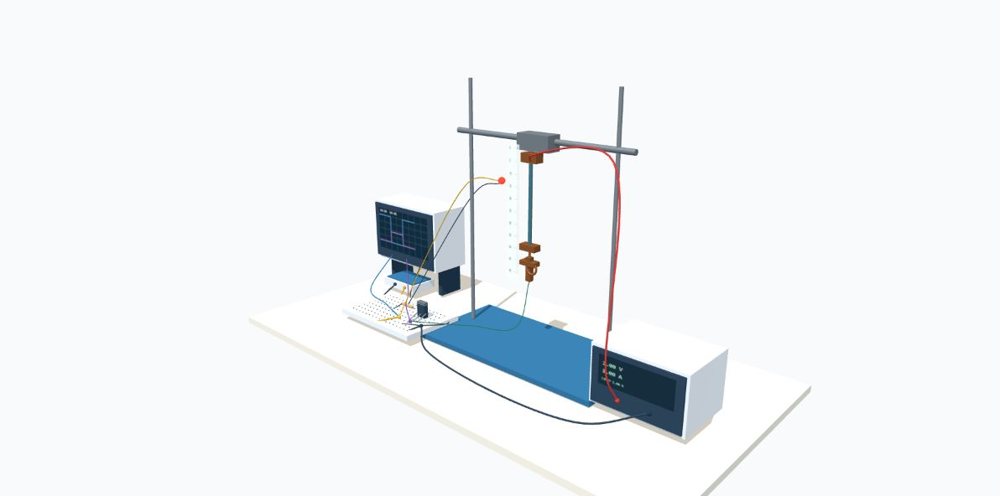

Controlled heating.
Measurable movement.
See how a simple circuit heats a liquid-metal-coated PDES strip so it contracts under load, and how that movement is recorded and analyzed.

Electrical input. Thermal response. Mechanical output.
One DC power supply sends current through the liquid-metal coating, and a function generator tells a MOSFET when to switch that current on and off. The strip heats and contracts, then cools and stretches back out under its hanging mass. A camera records the movement, and the video analysis measures how the length changes.
Choose where to begin.
A short explanation of every instrument, connection and material.
Six steps from sample preparation to analysis, matching the lab protocol.
Switch the gate signal and trace the control and heating paths.
Know what to record and how contraction strain is calculated.
Interactive strain, cycle and frequency-response charts from every analyzed MVI test.
Explore the full simulation.
Open the full 3D experiment in a new tab. Rotate and zoom the apparatus, switch between the whole setup and a close-up of the sample, and follow the simulated heating, contraction and electrical signals.
Use Show settings to change the drive signal, expand the graphs to inspect the signals, or choose Publication view for a clean figure of the apparatus. The motion and numbers are illustrations, not validated predictions.